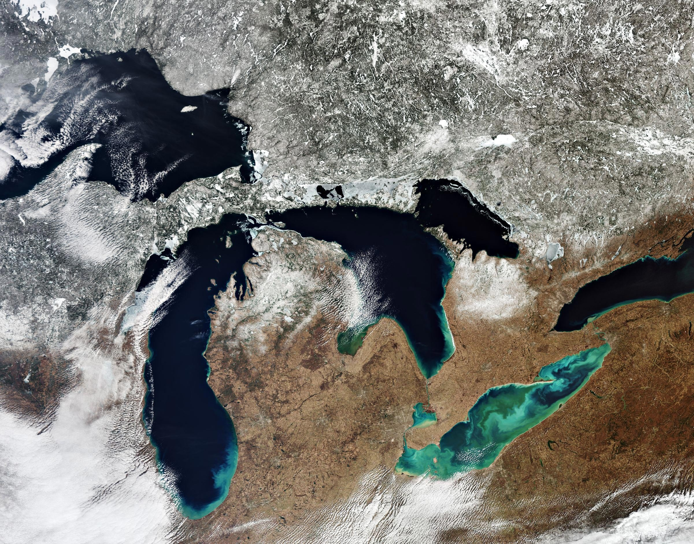

Welcome to the Great Lakes Region!
States and Provinces Covered
Illinois, Indiana, Iowa, Kentucky, Manitoba (Canada), Michigan, Minnesota,
Missouri, Nebraska, North Dakota, Nunavut (Canada), Ohio,
Saskatchewan (Canada), South Dakota, Wisconsin

Spectacular image captured on March 15, 2020, by the Copernicus Sentinel-3
mission of North America's Great Lakes: Lake Superior, Michigan, Huron, Erie,
and Ontario. A large quantity of ice and snow coverage is visible north of
the lakes, yet the amount of ice cover on the lakes is minimal - extremely
unusual for the ice season which typically runs from December 1 through
April 30. Credit: Contains modified Copernicus Sentinel data (2020),
processed by ESA, CC BY-SA 3.0 IGO